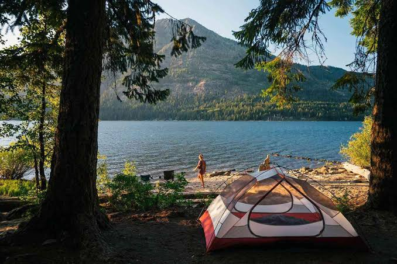

Pucón
Acceso gratuito
Playa Grande de Pucón
Playa urbana sobre el lago Villarrica, con servicios, gastronomía y actividades náuticas durante la temporada estival.
- Precio:
- acceso público gratuito; estacionamientos y servicios tienen costo
- Acceso:
- ruta CH-199, a unos 80 km de Temuco
- Mejor época:
- diciembre a marzo
Seguridad: báñate solo en zonas habilitadas, respeta las banderas y no ingreses al lago cuando haya viento o marejadas.